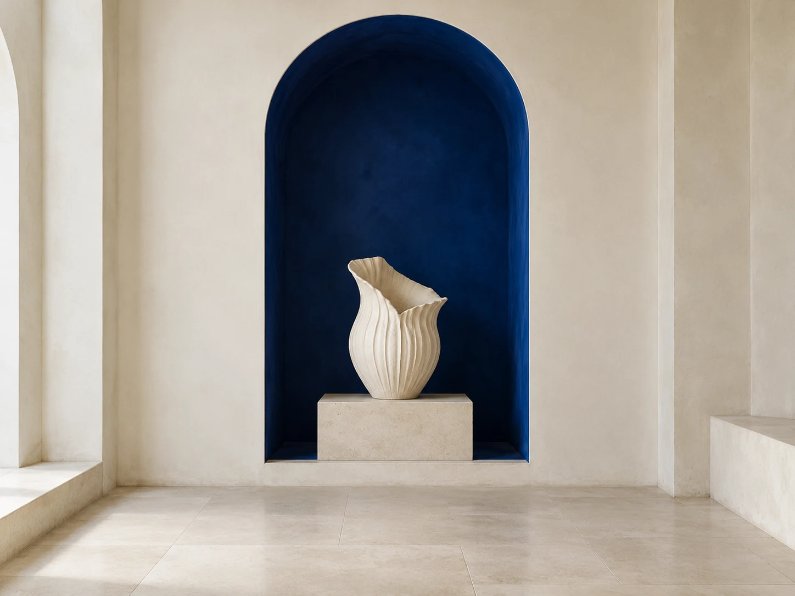
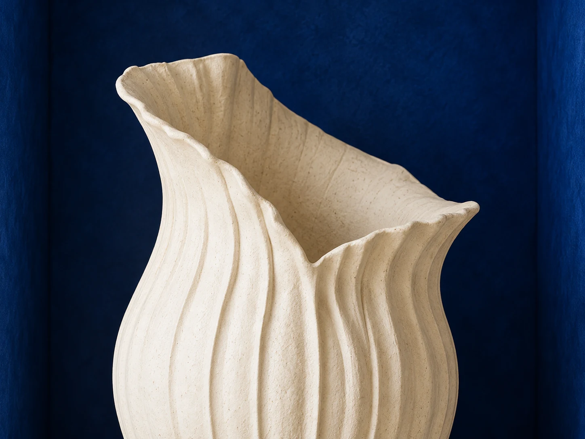

A little closer.
A little context can change the way you look.

Study vessel / Imagined collection, 2026Fictional object. Illustrative interpretation.
You, to AlcoveHelp me notice this vessel, without the art jargon.
Five small invitations to look.Start with the opening. Then follow the line.
5interpretive
notes
notes
A guide, ready.
100%

There is no hurry.Start with
Start with
the opening.
Before looking at the whole vessel, follow the rim. Its edge draws a small boundary between the space inside and the world around it.
Note 1 of 5 / Looking at formAn invitation,
not the last word.
not the last word.
“You do not need to know everything about an object to notice something of your own.”
Alcove is an illustrative guide to an imagined collection. Its notes offer a way into an object, not a verified account of its history.